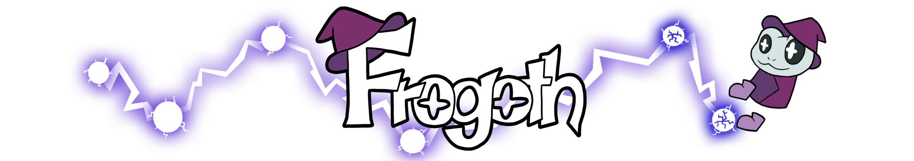
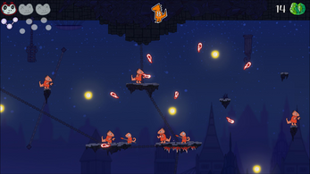
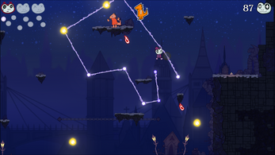
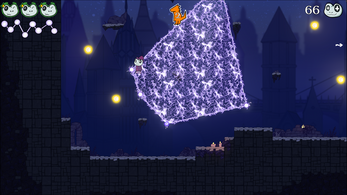

Frogoth
Godot · GDScript

Frogoth is a 2D platformer developed in the Godot Engine during my first semester at the S4G School for Games. The project focused on player movement and feel, giving me valuable experience with Godot and my first opportunity to develop a game as part of a team.



About the Game
Frogoth is a 2D Platformer that relies heavily on movement. As a magical frog, you explore a gloomy city full of dangers. You can't attack enemies directly – use your movement to create a shape around the enemies to defeat them. The game features a speedrunning mechanic, challenging levels, and full controller support.
The Project
The project was developed during our first semester at S4G School for Games over the course of 10 weeks by a team of seven people.
Tools
Development:
- Godot
- TortoiseHg (Mercurial)
Management:
- Trello
- Google Workspace
Responsibilities
As the sole programmer on the team, I was responsible for implementing gameplay mechanics and everything engine-related. This included learning the Godot engine, programming the game with GDScript, implementing UI and sound, creating some VFX/shaders, and set dressing some levels. I also worked closely with designers to ensure the player movement felt as good as possible and guided them in using the objects and settings I created.
Learnings
Frogoth was my first project with a team. I gained valuable understanding of the Godot engine and what makes 2D platformer movement feel satisfying. One of the most important lessons was working in a team and writing clean, maintainable code that remains understandable weeks later.
Highlights
You can view and download the source files here.
Player Character
Contains all input functions such as walking, jumping, placing orbs, and more.
Includes mechanics to improve player movement feel (e.g., coyote time, squash and stretch).
Killing Shape
The area the player can create to defeat enemies.
Enemy
A base enemy class from which other enemies inherit their behavior.
Currently, there are two types of enemies: one with a single shot
and another with a scatter shot.
Team
The team consisted of seven people: one programmer (me), two designers, and four artists.